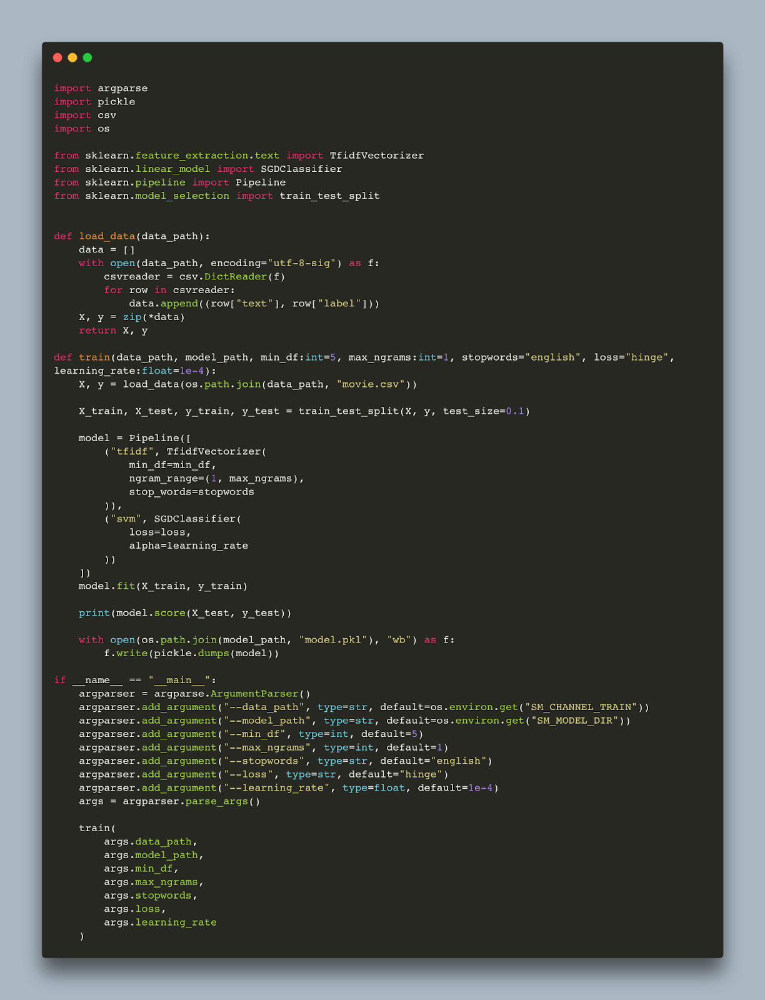
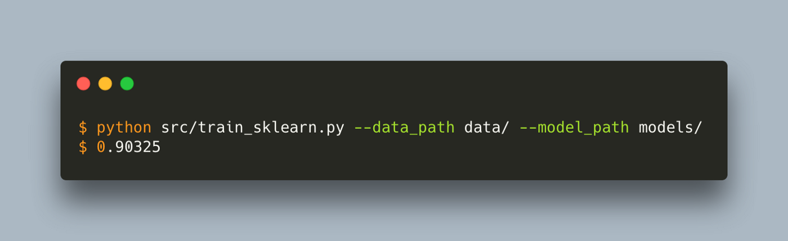
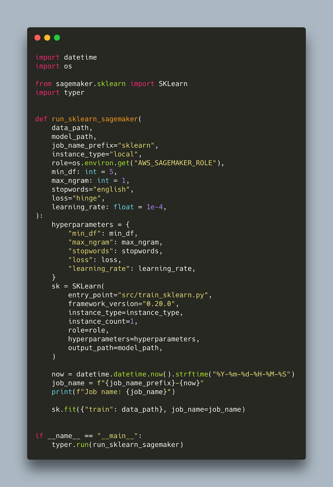
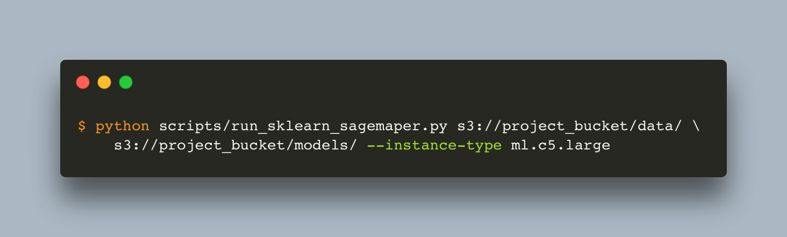
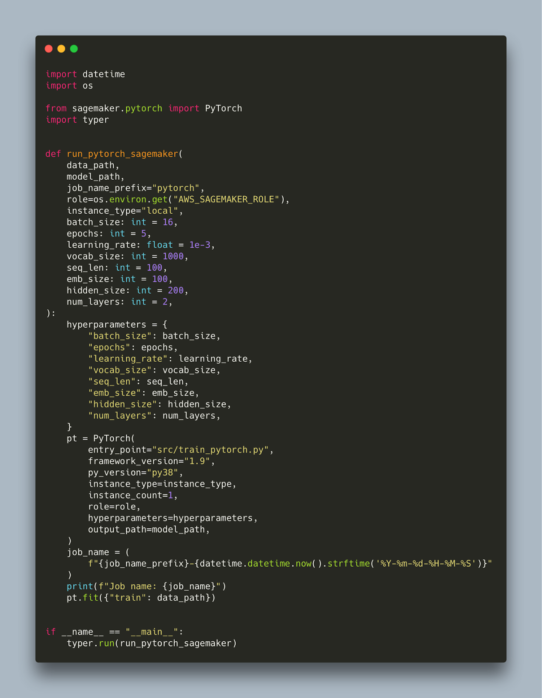
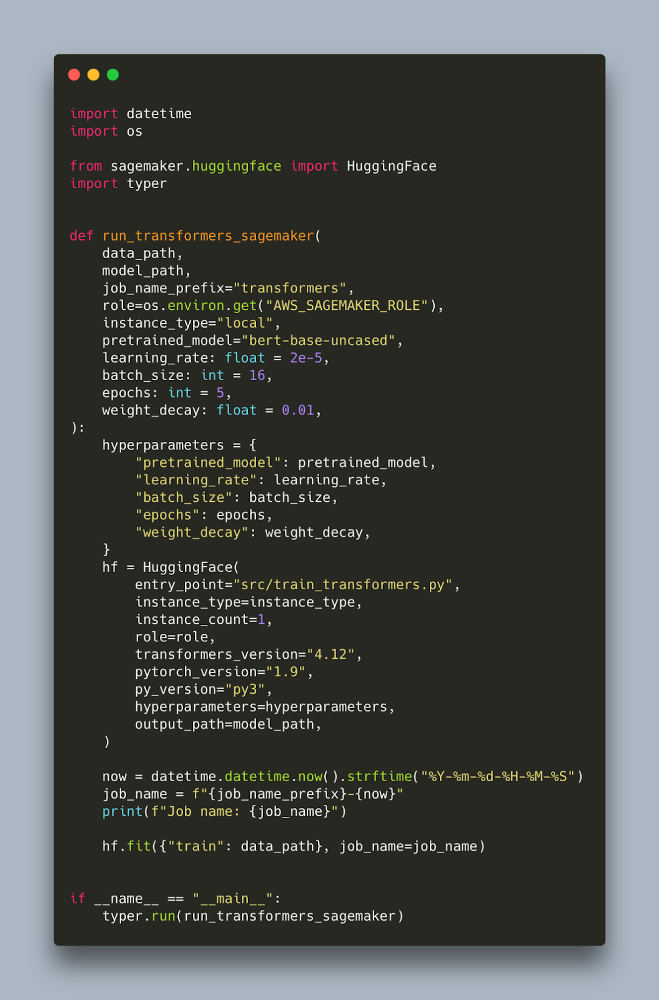
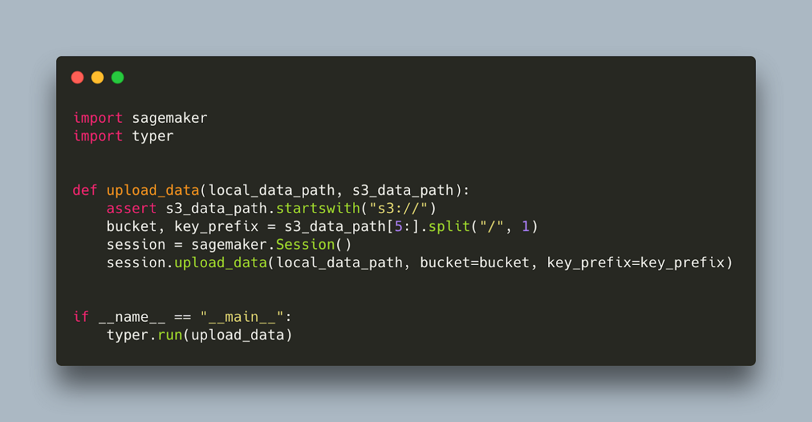
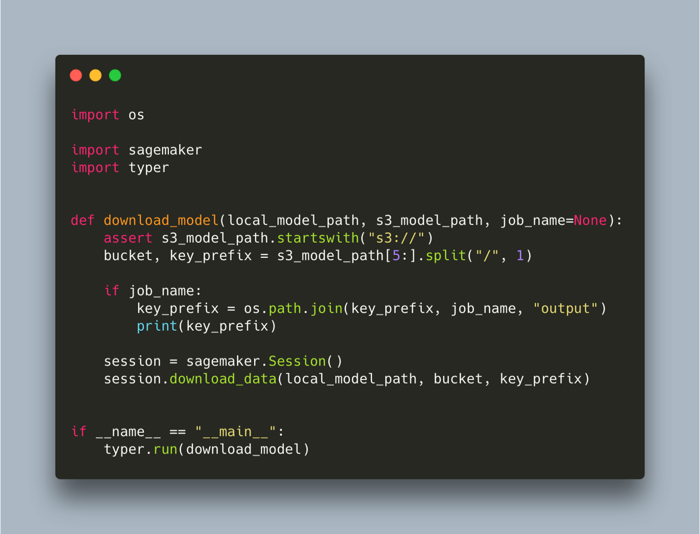
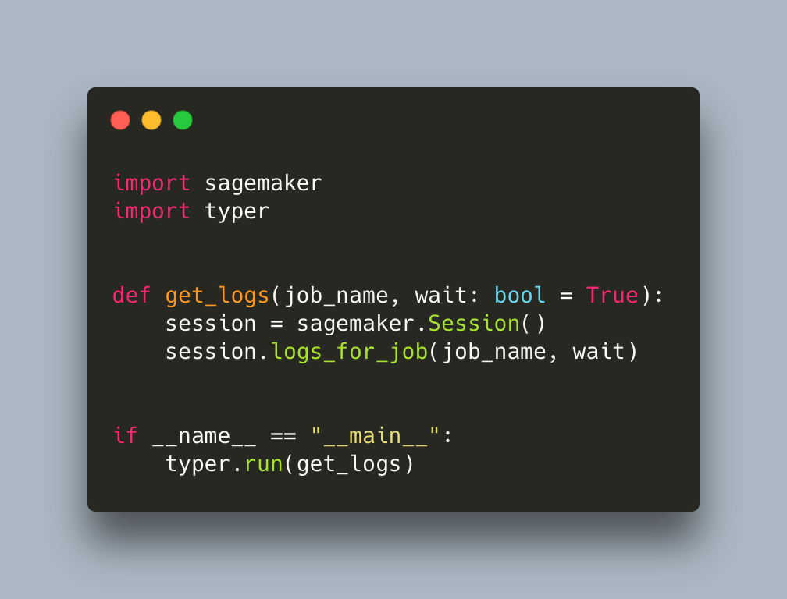
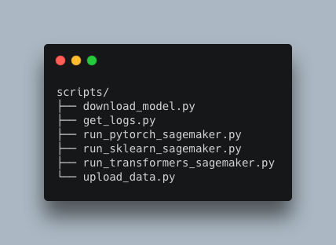

MLOps with SageMaker — Part I
How to effortlessly train sklearn 📊, pytorch🔥, and transformers 🤗 models in the cloud
SageMaker is a Machine Learning Operations (MLOps) platform, offered by AWS, that provides a number of tools for developing machine learning models from no code solutions to completely custom. With SageMaker, you can label data, train your own models in the cloud using hyperparameter optimization, and then deploy those models easily behind a cloud hosted API. In this series of posts we will explore SageMaker’s services and provide guides on how to use them, along with code examples. In this first post we will touch on training models using popular frameworks such as sklearn, pytorch and transformers for which Sagemaker provides pre-configured containers.
We will be working with a minimal project structure:

Most of the code for training models, preprocessing data or making predictions should live in src and be well tested. The scripts folder is reserved for automating tasks which might otherwise be done manually with few commands or lines of code. We will also use the scripts folder to store the scripts necessary to run your code on SageMaker.
The main library we need is sagemaker (which can be installed from pip as usual) but I am also going to be using typer for adding command line tool (CLI) functionality to my scripts. Other than those I will only use tqdm for adding progress bars, black for formatting and pytest for tests. All this is on top of the framework you want to experiment with, which in my case also includes pytorch, transformers, and sklearn.
The data I will be using comes from a sentiment classification task on Kaggle. The data comes in CSV format and contains two columns, text and label. The label is either 0 or 1.
Below is a simple training script in sklearn that trains a tf-idf svm pipeline using that data.

The script is vanilla sklearn. The only alteration for sagemaker is to set the default data_path and model_path. We can use this script outside sagemaker without any problem by passing a path to our data and models folder. Let’s run it

Before we explain the default values for model and data path let’s also write the script that will trigger the sagemaker job.

That’s it. We can now run this script by passing a path to our local data and models folder and it will download the container locally and run it.
![run-sagemaker-sklearn(/images/run-sagemaker-sklearn.png#center)
If we now change the instance type to one of the instances SageMaker works with (complete list here) and pass an s3 path to our data and models folder, the training will happen in the cloud.

One thing to note is that the data and model path needs to be prepended either with file:// or s3:// depending on whether you want to read from a local directory or s3.
In order for SageMaker to work, you need to have a role with appropriate permissions. You can read more on how to create that here. Here is also a terraform manifest that my co-founder Matt has written which might be helpful to set up. It is important to ensure the role has permissions to read and write in s3 in order to read the data and write the model. In this script we pass the role via a command line argument which by default reads it from an environment variable.
What’s going on under the hood is that sagemaker uses a preconfigured container with sklearn installed. We instruct sagemaker to use that container by using the SKLearn class. The version of sklearn is defined by the parameter framework_version, so in this example it is 0.20, and it is advised to have the same version in your requirements.txt to ensure a smooth experience. Currently sagemaker provides containers with version 0.20 and 0.23 but not 1.0+.
Our training script defined in the entry_point is copied inside the container. Note that our training script only uses the standard library and scikit-learn. If it was using a library not present in the container, SageMaker would throw an error. This is why we opted for argparse instead of typer for passing command line arguments to that script. We can define additional dependencies that will be installed in the container but let’s leave that for the next blog.
The data passed as a parameter is also copied inside the container inside a predefined location. This location is passed as the environment variable SM_CHANNEL_TRAIN. Similarly, there is a predefined location that sagemaker will look for the model in order to copy it outside the container. This location is also passed as an environment variable, SM_MODEL_DIR. Note that SageMaker does not copy your data to s3 automatically so this is something you need to do if the data is not there already. Lastly, the hyperparameters provided will get passed as command line arguments into our training script. As such they need to have the same name as the command line arguments in the training script. Even though not strictly required, we also pass a job_name to more easily retrieve the logs and the model afterwards.
Switching to a different framework should be straightforward as most of the code to trigger the SageMaker job was framework agnostic. Here is the equivalent script for PyTorch.

We have to switch to using the PyTorch class that takes similar arguments. The only other things that change are the hyperparameters, framework_version and the job_name_prefix. Currently, the latest pytorch version supported is 0.10. We also need to provide a valid python version, which now is py38, so once more it is advisable to be running python3.8 locally to ensure your code is compatible. Our entry_point targets a pytorch training script which you can find here.
Finally, let’s switch to transformers:

As previously, we need to import the right class which in this case is HuggingFace. We need to provide appropriate versions for our main libraries pytorch and transformers. The latest transformers version supported at time of writing is 4.12. Our hyperparameters are also specific to the training script which you can find here.
As we mentioned, uploading your data to s3 is also necessary to get sagemaker working. It may be that your data is already there. If not, there are a couple of ways you can upload them including awscli with aws s3 cp. SageMaker also provides a convenient function that allows you to upload single files or entire folders in a predefined location. Here it is wrapped in a script.

You may also want to download the trained model locally. There is another function that allows you to download file(s) from s3. Here it is, also wrapped in a script.

Note that we introduce an optional parameter job_name. This is because SageMaker does not only save the model in the model_path but also some other information like logs. If we simply want to download the model, this is stored inside job_name/output which is one of the reasons we want to have control of the job name instead of having it auto generated.
Finally, when you kick off a job with sagemaker, it streams the logs produced by default. Some of those jobs though will need some time to finish so you need a way to access the logs at random intervals. You can easily do that via another SageMaker command, like here:

The wait parameter provides logs in a streaming fashion as we would see them in the terminal if we were running the script locally. We can interrupt at any point without killing the job.
These are all the additional scripts we added to work with SageMaker

You can find the complete code inside this repository https://github.com/MantisAI/sagemaker_examples, including the training scripts for pytorch and transformers.
In this post we set the scene on how to use SageMaker to train your models. We started by using its pre configured framework containers which easily allow you to run your script in the cloud. We also created some helper scripts to upload data and download models as well as see logs to be able to work with and monitor a SageMaker job.
In our next post we will explore how we can customize our training by including additional libraries, bringing additional scripts and building our own containers. We will then explore inference with SageMaker. Stay tuned.